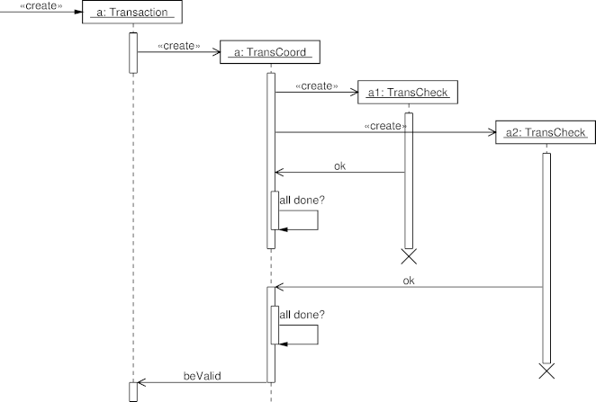

Sequence Diagram Example: Concurrent Processes and Activations
The following diagram, based on the diagram appearing on p. 70 of
UML Distilled, contains self calls, object activation,
self-deleted objects, and asynchronous messages.
Diagram

Diagram Source Code
# UML Distilled: Figure 5-2 p. 70
.PS
copy "sequence.pic";
boxwid = 1.3;
# Define the objects
pobject(X);
pobject(T);
pobject(C);
pobject(A1);
pobject(A2);
# Message sequences
cmessage(X,T,"a: Transaction");
active(T);
async();
cmessage(T,C,"a: TransCoord");
inactive(T);
active(C);
cmessage(C,A1,"a1: TransCheck");
active(A1);
cmessage(C,A2,"a2: TransCheck");
active(A2);
message(A1,C,"ok");
sync();
step();
active(C);
message(C,C,"all done?");
inactive(C);
async();
step();
delete(A1);
inactive(C);
step();
message(A2,C,"ok");
active(C);
sync();
step();
active(C);
message(C,C,"all done?");
inactive(C);
async();
step();
delete(A2);
message(C,T,"beValid");
inactive(C);
active(T);
step();
complete(T);
complete(C);
.PE
 Last change: Tuesday, October 28, 2014 4:26 pm
Last change: Tuesday, October 28, 2014 4:26 pm